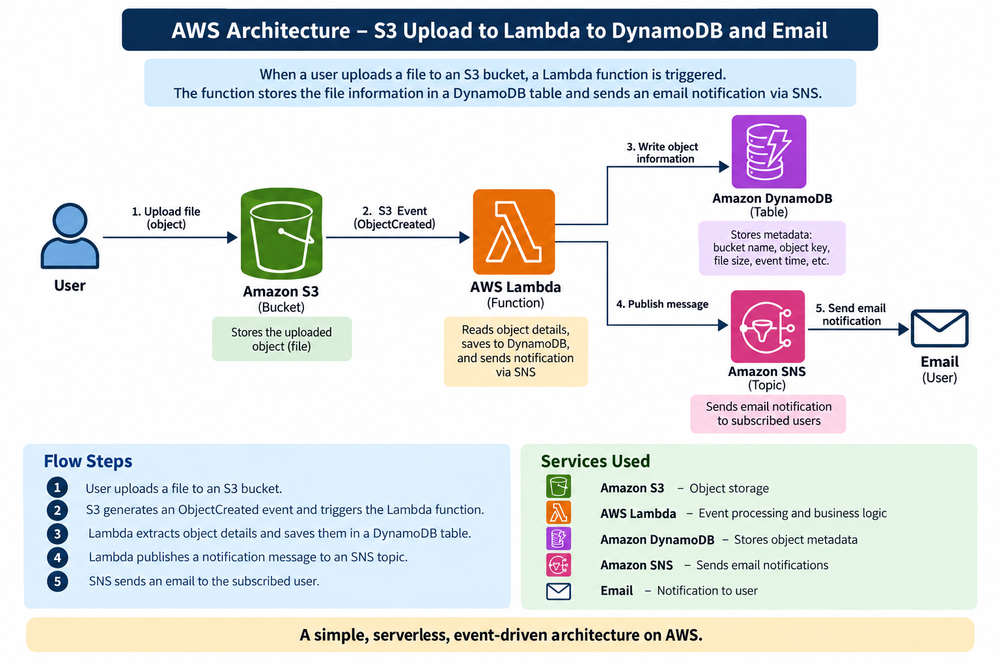

AWS Reference Library
AWS Services, one topic at a time
Independent, hands-on guides for the AWS services powering GradeSync and FocusFlow. Each guide covers the concept, key terms, step-by-step setup in the AWS console, and a quiz. Jump into any topic — no order required.
📚 7 Independent Guides
🛠️ Hands-on Steps
🧠 Knowledge Quizzes
💡 GradeSync context
GradeSync Full Pipeline
